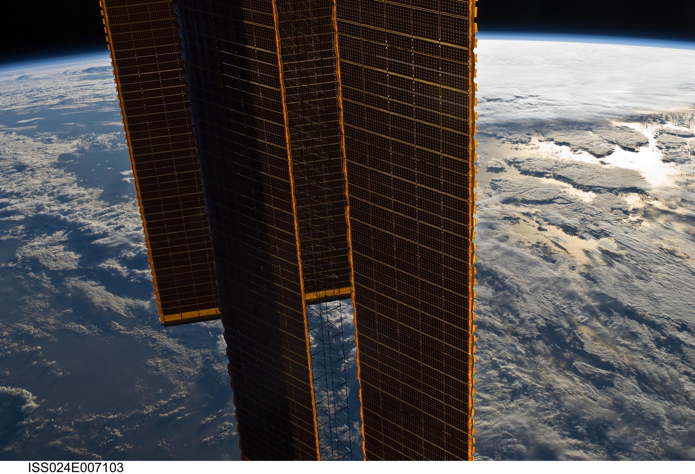

Mission-science discipline, applied to commercial work.
We partner with commercial space and technology companies that need the rigor of a national mission program. For nearly five decades we have engineered instruments, built flight hardware, and turned observation into intelligence for the agencies that explore and observe. We put that same discipline to work for the companies building the new space economy.
Partners building the new space economy.
We work with commercial space ventures, satellite operators, instrument developers, and technology companies that carry mission-class requirements. When a payload has to survive launch, a sensor has to hold calibration on orbit, and a dataset has to be trusted by a paying customer, the work cannot fail.
Commercial programs move fast and carry real risk. SSAI brings the engineering controls and quality systems the work demands, the same standards we hold on flagship science missions, fielded at a pace and price commercial partners can build on. We engineer instruments, build flight and ground hardware, and turn raw observation into data products and AI-driven intelligence companies can sell, ship, and stand behind.
We are a single, trusted source. The scientists, engineers, and manufacturing teams who proved this discipline on national missions are the same people who deliver it to commercial partners, the first time, and every time.

NASAFrom instrument to intelligence.
We map our mission-proven capabilities to the work commercial partners need most: building the hardware that flies, operating what is on orbit, and turning observation into products that sell.
Sensors and payloads that hold their accuracy
We engineer and calibrate the instruments commercial missions depend on. Systems engineering, avionics and software at CMMI Level 3, FPGA design, and integration and testing give partners a payload that performs to spec at delivery and holds it on orbit.
Flight hardware, end to end
We build flight and ground hardware from prototype to production in a 32,000 square foot electronics facility and a 10,000 square foot machine shop, under two miles from NASA Goddard. Commercial partners get Mil-spec manufacturing without standing up their own line.
Operations the mission cannot do without
We keep missions running from pre-launch through on-orbit, with instrument calibration and operational modeling proven around the clock on national programs. Commercial operators get a partner who has run the hardest missions in space.
Observation turned into product
We turn raw sensor data into intelligence a customer will pay for: geospatial and remote sensing, data assimilation, and weather and space-weather forecasting. Commercial data ventures get the science pipeline behind a defensible product.
AI and digital twins, built on real science
We apply AI and machine learning where it earns its place: digital twins, anomaly detection, and analytics that scale, including the CREST digital-twin framework. Technology partners get models grounded in mission data, not guesswork.
The full span, one partner
Through three wholly-owned subsidiaries, Advanced Mission Partners, Elucidation Concepts, and Sigma Engineering and Fabrication, commercial partners reach electronics, cybersecurity, and precision manufacturing under one trusted source.
Discipline proven on the hardest missions.
The instruments, hardware, and data pipelines we deliver to commercial partners are built on capability proven in flight. Our work spans the missions that define the standard.
Flight-proven instruments
From JWST and Roman to PACE and SWOT, SSAI has helped engineer, calibrate, and operate the instruments that turn light and observation into trusted data.
Operational data products
We have delivered the assimilation and forecasting pipelines behind operational Earth, ocean, and weather products, the same pipelines commercial data ventures build on.
Cleared, Mil-spec production
Our manufacturing teams build flight hardware to aerospace quality standards, with the certifications and clearances that let a commercial program carry mission-class risk.
Every mission space.
We field the same five capabilities across six markets. Explore where else SSAI delivers, and the capabilities behind every engagement.
Defense & National Security
Mission systems and instrument engineering for the agencies that defend.
MarketFederal Civilian
Science, data, and operations for the civilian agencies that observe and serve.
MarketIntelligence Community
Geospatial, remote sensing, and secure systems for the IC.
MarketState & Local
Environmental intelligence and analytics for state and local missions.
MarketOCONUS & International
Mission capability fielded beyond the continental United States.
CapabilitiesThe five capabilities
Science, engineering, manufacturing, environmental intelligence, and digital defense, the capability behind every market we serve.
Put mission discipline to work on your commercial program.
From contracting paths to a full capability statement, see how SSAI partners with the companies building the new space economy.